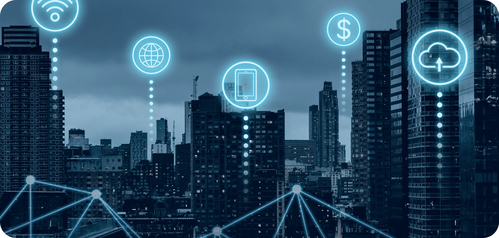

National Logistics Policy 2022: Explained
INTRODUCTION
The Logistics sector is no doubt the cornerstone of our economy, playing a significant role in facilitating the movement of raw materials, goods, and resources from one place to another. Behind every successful business venture is the well-operating logistics operations enabling businesses to meet consumer demands promptly. Not only in the efficient running of businesses, but logistics has industry played a significant role in contributing to the growth of the economy which accounts for 13-14% of the GDP. In essence, the logistics sector is the backbone of economic vitality, enabling industries to function smoothly, markets to flourish, and nations to connect on a global scale.
What is National Logistics Policy 2022?
Logistics Industry sure is one of the prominent features of our economy but we cannot deny that the sector is extremely complicated and inefficient. Reason being the sectors major reliance on traditional methods of operations, giving rise to high cost, inefficiency, and delay. To boost the sector and bring on much-needed change, on September 17, Prime Minister Narendra Modi announced the National Logistics Policy 2022. The major target of the policy:
- Reduce Logistics cost from 13-14% of the GDP to 8% to match the global benchmark
- Being among the top 10 countries in the LPI (Logistics Performance Index) by 2030.
- Introduction of a digital platform to boost efficiency and competitiveness.
- Boost trade and commerce in the country by minimizing logistics issues by creating a centralized platform for the speedy resolution of all the issues
1. Reducing Logistics Cost
Currently, the logistics cost is estimated at around 13-14% of the GDP, which is way higher compared to other economies like the USA, South Korea, Singapore, and certain Western countries. The NLP aims to bring down this cost to 8% in the next five years and become one of the top 10 countries in the Logistics Performance Index.
There are many reasons leading to high logistics costs including never-ending customs, paperwork, and formalities caused due to unavailability of a centralized platform for all the operations. Poor infrastructure, increased fuel costs, and inefficient tracking systems continue to add to the overall cost of transportation. The NLP aims to cut off all unnecessary costs and improve logistics efficiency by the year 2030
There are many reasons leading to high logistics costs including never-ending customs, paperwork, and formalities caused due to unavailability of a centralized platform for all the operations. Poor infrastructure, increased fuel costs, and inefficient tracking systems continue to add to the overall cost of transportation. The NLP aims to cut off all unnecessary costs and improve logistics efficiency by the year 2030

2. DIGITAL TRANSFORMATION
Another major focus of NLP is to push the logistics sector toward digital transformation, being one of the most necessary changes the industry must adopt in order to meet global standards. The Logistics sector in India is lacking because of its incompetency and inefficiency which is because the industry majorly relies on traditional methods of operations. With digitization coming into play, the industry can shift to a centralized platform for all operations, saving cost, time, and resources. The new policy has certain features through which it aims to adopt digitization
Digital Integration System:
Under this, the government hints to adopt a centralized platform to manage data from all departments like road, rail, customs, aviation, and commerce department
Unified Logistics Interface Platform
Creating a unified portal for all digital services provided by the logistics industry, making it easier for all users of the industry with long and complicated processes
Ease of Logistics Services
The Introduction of ELOGS aims for a speedy resolution of all operational issues related to logistics by directly consulting with government agencies

Comprehensive Logistics Action Plan
An action plan for the growth and development of the logistics industry including standardization of physical assets, benchmarking service standards, human resource development, capacity building, development of logistics parks, etc.
Economic Development
National Logistics Policy also aims to boost trade in the economy through the introduction of digital and innovative technology in the industry to simplify complex processes and increase efficiency. Through seamless supply chain management, the industry can reduce lead time, minimizes stock-outs, and optimizes inventory levels, contributing to enhanced production and distribution processes. With technology coming into play, the industry gives rise to various job opportunities while also creating sustainability and efficient human resource resulting in reduced costs and more trade in the economy.

CONCLUSION
The logistics sector of our country is in high need of change and improvement. Because of high logistics costs and inefficiency, the industry fails to stand high in the global competitive market. With the introduction of the National Logistics Policy 2022, the high logistics cost can be drastically cut off, increasing efficiency, adding value to different sectors, and promoting entrepreneurship. It is one way, the industry can compete with global standards making the country “Atmanirbhar” or “Self-Sustainable”
This step of PM Gati Shakti is the very master plan the country needed to boost its logistics efficiency and overall growth of the economy.
This step of PM Gati Shakti is the very master plan the country needed to boost its logistics efficiency and overall growth of the economy.